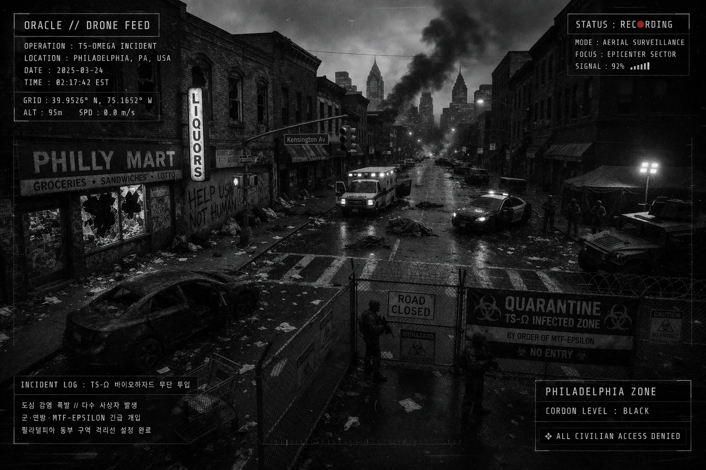
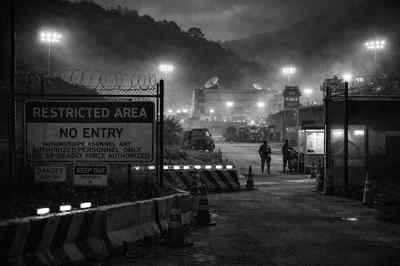
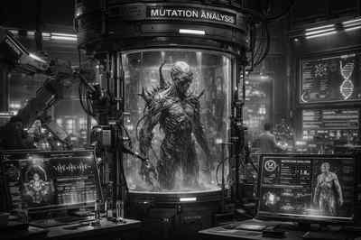
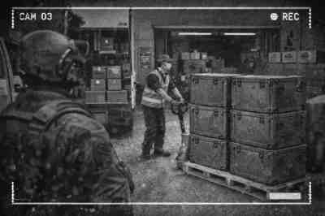

DRONE FEED2022 // Z-Ω
Philadelphia
구조 명령이 회수 명령으로 바뀌는 순간. “살리는 것”과 “확산을 막는 것”이 처음으로 분리됐다.
TIU의 사건은 지역, 세력, 이상현상, 민간 피해, 은폐 방식, 윤리적 선택, 후속 떡밥으로 반복 생산된다. 이 페이지는 공개 가능한 시작점만 정리한다.
사건 설명은 플레이어 진입을 위한 공개/암시 레벨로 제한한다.

DRONE FEED구조 명령이 회수 명령으로 바뀌는 순간. “살리는 것”과 “확산을 막는 것”이 처음으로 분리됐다.
 CITY SEALED
CITY SEALED실험 실패가 도시 구조 자체를 바꾼 사례. 건물, 주민, 기록의 경계가 무너진다.
세계 유일의 성공 구역 내부에서 시작되는 첫 명령. 성공률이 높을수록 은폐 비용도 커진다.
AI GM이나 카드게임이 바로 장면으로 사용할 수 있는 표면 장소. 세부 보안 구조는 공개하지 않는다.
첫 보고, 출동 승인, 사본 은닉 선택이 모두 가능한 장소. 명령은 빠르지만 기록은 느리다.
좌표 반복, 구조 신호, 음성 모방이 같은 화면에 오른다. 답신 여부가 첫 번째 판정이다.

RESTRICTED허가증은 통과했지만 카메라는 멈춘다. 여기서부터 문서 누락이 사건이 된다.

BIO LABPhase 0 판정과 격리 해제가 맞물리는 장소. 치료와 봉쇄의 문장이 서로 충돌한다.

SUPPLY방벽 안의 평온은 물류로 유지된다. 누락된 상자 하나가 암시장 루트로 이어질 수 있다.
비, 바람, 안개는 장식이 아니다. 포자형 개체와 방벽 경보가 같은 날 움직인다.
스트리머나 플레이어가 자기 투영 캐릭터로 진입하기 좋은 사건 구조.
| ROUTE | OPENING | CHOICE |
|---|---|---|
| 한국 지부 | 기록보존실 B-12에서 손상 문서가 복원된다. | 보고, 사본 저장, 좌표 입력, 자유 행동. |
| 미국 봉쇄선 | 보험 직원이 봉쇄권 내부 가족 청구를 발견한다. | 거절, 추적, 언론 제보, 내부 접촉. |
| 일본 해안 | 괴담 채널 조사원이 폐쇄 신사 영상을 받는다. | 촬영, 삭제, 자위대 제보, 익명 게시. |
| 러시아 철도 | 시베리아 보급 열차에 11년 전 구조 신호가 들어온다. | 응답, 무시, 주파수 저장, 승객 조사. |
| EU 국경 | 가족은 서류상 함께지만, 검역 게이트는 아이만 거부한다. | 법원 신청, 게이트 우회, NGO 연락, 기록 대조. |
| 독일 법정 | 완치 판정자가 감염 이력 때문에 직장을 잃는다. | 소송, 기록 감사, 언론 공개, 합의. |
| 호주 내륙 | BIOSAFE-AU가 한 광산 좌표를 반복 거절한다. | 좌표 재입력, 현장 조사, 회사 제보, 가족 신고. |
| 메리디언 계약 | 대피 명단이 의료 위험도보다 계약 등급을 우선한다. | 계약서 유출, 대피 순서 변경, 내부 고발, 침묵. |